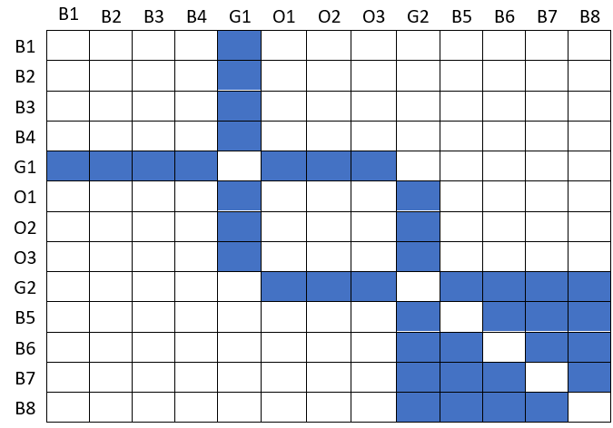

Name TWO combinations of ingredients that were combined most often.
If we would represent the same data with an adjacency matrix, would the task be simpler to solve?
Explain why or why not?
The main problem that figure 02 presents for solving the task is the overlapping of the arrows. The adjacency matrix would fix this problem. We could use a weighted adjacency matrix and rely on color as a visual variable using a sequential color scheme. We should order them according to their corresponding group so that the most often combinations would be easily visualized.
Transform the node-link diagram shown in Figure 03 to an adjacency matrix. (2/5) 
How many patterns can be found? Name and explain those patterns. (3/5)
- Node clique (without self link) – the last 5 nodes (G2 to B8) form a set in which all the nodes within are connected to each other.
- Hub nodes: are highly connected nodes that play a significant role in the network’s structure. The two green nodes (G1 and G2 in the adjacency matrix) present dense rows and columns.
The patterns are affected according to the ordering of the nodes in the matrix. The clique could potentially not be identified, and new patters may arise, such as stairs or paths.
You were given a social network of 100 people.
You want to identify whether person A and person B know each other.
If there is no direct connection, you want to find a path between the two nodes.
Which visualization technique would you choose (node-link diagram or adjacency matrix)?
Explain your choice.
We would choose to visualize it though a node-link diagram, since they are better to identify node topologies, and 100 nodes would still be a reasonable size so that the visualization is straightforward. The node-link diagram is a more intuitive representation to the connections between people and its easier to trace paths.